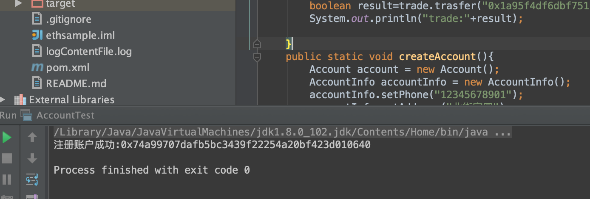
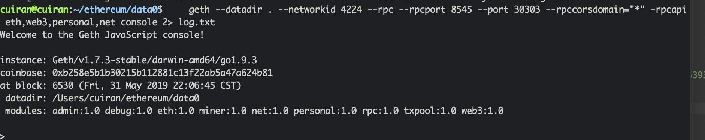

2. 添加账户¶
新建一个测试类AccountTest 测试新建账户
public static void createAccount(){
Account account = new Account();
AccountInfo accountInfo = new AccountInfo();
accountInfo.setPhone("12345678901");
accountInfo.setAddress("北街家园");
accountInfo.setSchool("清华大学");
accountInfo.setUserName("cayden");
String accountId = account.createAccount("cayden","123456",accountInfo);
System.out.println("注册账户成功:"+accountId);
// PersonalAccountsInfo.AccountsInfo accountsInfo = account.getAccountInfo("0xad7bbca86e02e503076b06931e05938e51e49fb9");
// System.out.println(accountsInfo.toString());
}
运行效果如图所示

运行前提是需要启动节点
